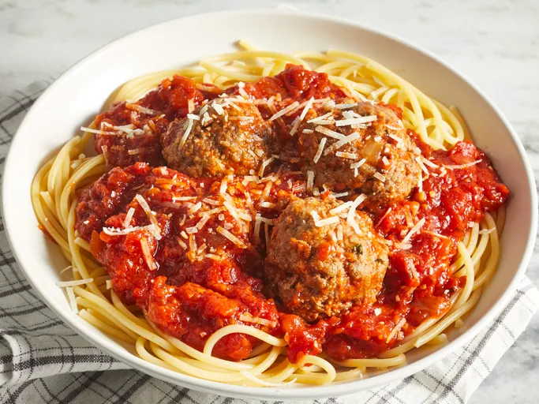

Spaghetti with meatballs
Home

The recipe features beef meatballs and a slowly simmered tomato sauce for a deeply flavorful meal.
Home cooks love adding carrots, red wine, or blending the sauce to make it their own.
Allrecipes member j cook says, “I loved this recipe. The sauce truly tastes so 'fresh'.
This recipe is a classic Italian dish.
Ingredients
- Ground Beef
- Bread crumbs
- Parsley
- Parmesan cheese
- Black Pepper
Steps
- Combine ground beef, bread crumbs, parsley, Parmesan, 1/4 teaspoon black pepper, garlic powder and beaten egg in a large bowl. Mix well and form into 12 balls. Store, covered, in refrigerator until needed.
- In a large saucepan over medium heat, sauté onion and garlic in olive oil until onion is soft and translucent, being careful not to brown, about 5 minutes.
- Stir in tomatoes, salt, sugar and bay leaf. Cover, reduce heat to low, and simmer for 90 minutes.
- Stir in tomato paste, basil, and 1/2 teaspoon black pepper. Add meatballs, cover, and simmer 30 minutes more.